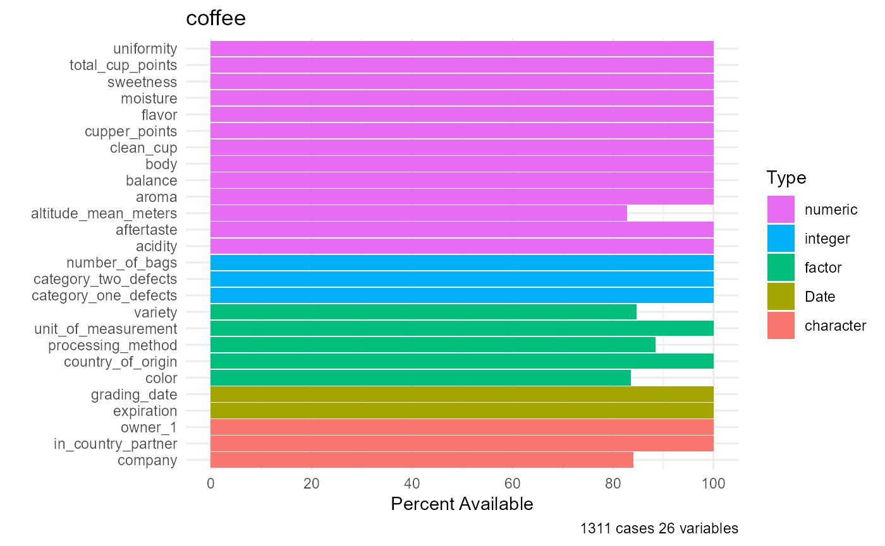
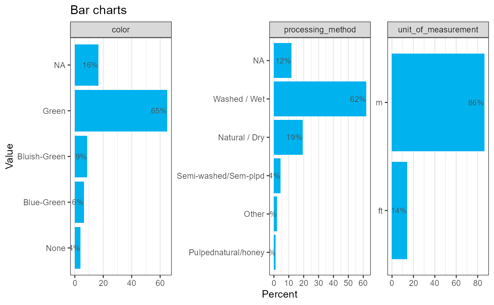
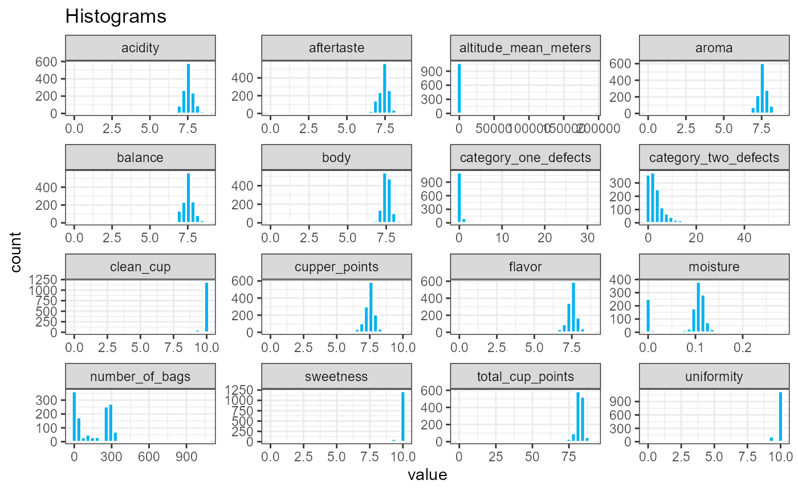
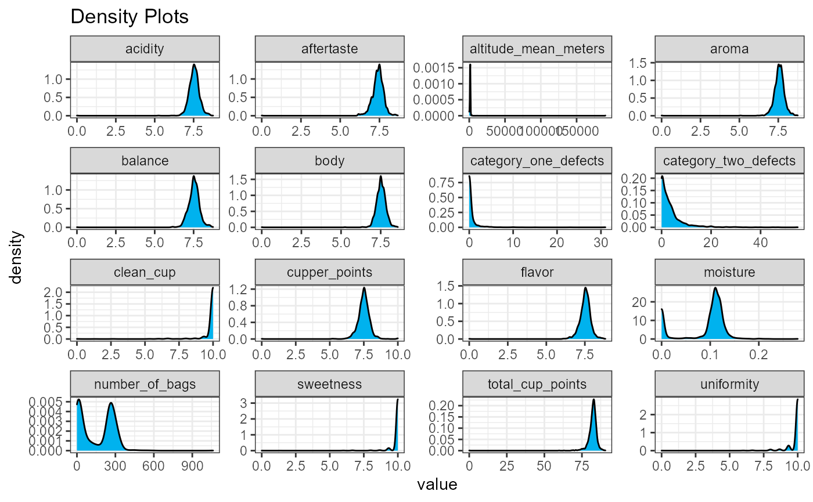

The purpose of the qacr package is to provide functions for descriptive statistics, data management, and data visualization. As a part of this package, the contents function produces a series of informational tables that allow for users to have a comprehensive understanding of their dataset of choice as well as the each of the quantitative and categorical variables featured in their dataset. Graphical functions, such as barcharts, histograms, and densities provide succinct visualizations of the variables in a data frame.
How can you quickly become familiar with the data in a data frame? We’ll use the coffee data frame as an example. This data frame contains information on the ratings and characteristics of 1312 arabica coffee beans.
data(coffee)contents()
contents(coffee)
#>
#> The data frame coffee has 1,311 observations and 26 variables.
#>
#> Overall
#> pos varname type n_unique n_miss pct_miss
#> 1 country_of_origin factor 37 0 0%
#> 2 company character 269 209 16%
#> 3 number_of_bags integer 130 0 0%
#> 4 in_country_partner character 27 0 0%
#> 5 grading_date Date 556 0 0%
#> 6 owner_1 character 310 0 0%
#> 7 variety factor 30 201 15%
#> 8 processing_method factor 6 152 12%
#> 9 aroma numeric 33 0 0%
#> 10 flavor numeric 35 0 0%
#> 11 aftertaste numeric 35 0 0%
#> 12 acidity numeric 31 0 0%
#> 13 body numeric 31 0 0%
#> 14 balance numeric 32 0 0%
#> 15 uniformity numeric 10 0 0%
#> 16 clean_cup numeric 11 0 0%
#> 17 sweetness numeric 8 0 0%
#> 18 cupper_points numeric 42 0 0%
#> 19 total_cup_points numeric 178 0 0%
#> 20 moisture numeric 23 0 0%
#> 21 category_one_defects integer 16 0 0%
#> 22 color factor 5 216 16%
#> 23 category_two_defects integer 38 0 0%
#> 24 expiration Date 556 0 0%
#> 25 unit_of_measurement factor 2 0 0%
#> 26 altitude_mean_meters numeric 202 227 17%
#>
#> Numeric Variables
#> n mean sd skew min p25 median p75
#> number_of_bags 1311 153.89 129.73 0.32 0 14.50 175.00 275.00
#> aroma 1311 7.56 0.38 -6.29 0 7.42 7.58 7.75
#> flavor 1311 7.52 0.40 -5.21 0 7.33 7.58 7.75
#> aftertaste 1311 7.40 0.41 -4.83 0 7.25 7.42 7.58
#> acidity 1311 7.53 0.38 -5.95 0 7.33 7.50 7.75
#> body 1311 7.52 0.36 -7.14 0 7.33 7.50 7.67
#> balance 1311 7.52 0.41 -4.83 0 7.33 7.50 7.75
#> uniformity 1311 9.83 0.56 -6.91 0 10.00 10.00 10.00
#> clean_cup 1311 9.83 0.77 -7.36 0 10.00 10.00 10.00
#> sweetness 1311 9.90 0.53 -10.73 0 10.00 10.00 10.00
#> cupper_points 1311 7.50 0.47 -2.83 0 7.25 7.50 7.75
#> total_cup_points 1311 82.12 3.52 -10.51 0 81.17 82.50 83.67
#> moisture 1311 0.09 0.05 -1.01 0 0.09 0.11 0.12
#> category_one_defects 1311 0.43 1.83 10.22 0 0.00 0.00 0.00
#> category_two_defects 1311 3.59 5.35 3.64 0 0.00 2.00 4.00
#> altitude_mean_meters 1084 1784.20 8767.02 20.04 1 1100.00 1310.64 1600.00
#> max
#> number_of_bags 1062.00
#> aroma 8.75
#> flavor 8.83
#> aftertaste 8.67
#> acidity 8.75
#> body 8.58
#> balance 8.75
#> uniformity 10.00
#> clean_cup 10.00
#> sweetness 10.00
#> cupper_points 10.00
#> total_cup_points 90.58
#> moisture 0.28
#> category_one_defects 31.00
#> category_two_defects 55.00
#> altitude_mean_meters 190164.00
#>
#> Categorical Variables
#> variable level n pct
#> country_of_origin 1 0.00
#> Brazil 132 0.10
#> Burundi 2 0.00
#> China 16 0.01
#> Colombia 183 0.14
#> Costa Rica 51 0.04
#> Cote d?Ivoire 1 0.00
#> Ecuador 1 0.00
#> El Salvador 21 0.02
#> Ethiopia 44 0.03
#> (27 more levels) 859 0.66
#> company 21 0.02
#> ac la laja sa de cv 1 0.00
#> acacia hills ltd 1 0.00
#> afca 1 0.00
#> agricola nueva grana 3 0.00
#> agro xicotepec 2000 1 0.00
#> agroindustrias unida 1 0.00
#> amkeni gourmet coffe 1 0.00
#> armajaro guatemala, 4 0.00
#> asefa dukamo coffee 1 0.00
#> (258 more levels) 1067 0.97
#> in_country_partner Africa Fine Coffee A 49 0.04
#> Almacaf 178 0.14
#> AMECAFE 205 0.16
#> Asociacin de Cafs Es 8 0.01
#> Asociacin Mexicana D 6 0.00
#> Asociacion Nacional 155 0.12
#> Blossom Valley Inter 58 0.04
#> Blossom Valley Inter 1 0.00
#> Brazil Specialty Cof 67 0.05
#> Central De Organizac 1 0.00
#> (17 more levels) 583 0.44
#> owner_1 7 0.01
#> Koju Matsuzawa 8 0.01
#> Acacia Hills Ltd 1 0.00
#> Adam Ciruli Ye 2 0.00
#> Adam Kline 3 0.00
#> ADRIANA TORRES RICO 1 0.00
#> AFCA 17 0.01
#> ALEJANDRO GARCIA PAL 4 0.00
#> Alexandra Katona-Car 1 0.00
#> ALFREDO BOJALIL 19 0.01
#> (300 more levels) 1248 0.95
#> variety Arusha 5 0.00
#> Blue Mountain 2 0.00
#> Bourbon 226 0.20
#> Catimor 20 0.02
#> Catuai 74 0.07
#> Caturra 256 0.23
#> Ethiopian Heirlooms 1 0.00
#> Ethiopian Yirgacheff 2 0.00
#> Gesha 12 0.01
#> Hawaiian Kona 44 0.04
#> (19 more levels) 468 0.42
#> processing_method Natural / Dry 251 0.22
#> Other 26 0.02
#> Pulped natural / hon 14 0.01
#> Semi-washed / Semi-p 56 0.05
#> Washed / Wet 812 0.70
#> color Blue-Green 82 0.07
#> Bluish-Green 112 0.10
#> Green 850 0.78
#> None 51 0.05
#> unit_of_measurement ft 182 0.14
#> m 1129 0.86As shown above, the contents function produced three tables, one that provides an overall summary of the data and two tables that break down the quantitative and categorical variables of the dataset respectively.
The overall table describes each of the variables in the data frame, listing their column position, variable name, the variable type, number of unique values, the number of missing values, and the corresponding percentage of missing values.
The quantitative table provides information for each of the quantitative variables in the data frame, listing the variable name, the number of non-missing values, and a series of summary statistics including the mean, standard deviation, skewness, minimum, 25%tile, median, 75%tile, and maximum.
The categorical table provides information for each of the categorical variables in the data frame, listing the variable name, the specific levels of each variable, and the number of observations for each level, and percentage distribution of each variable level. By default, up to 10 levels of a categorical variable are displayed (but you can increase this by adding the option maxcat = #, where # is the number of levels to display).
If the dataset only contains quantitative or categorical, then only the overall summary table and the relevant variable table would be printed.
The df_plot function provides a single graph displaying the variables, their types, and the percent of values present (or missing).
df_plot(coffee)
The barcharts function plots the distribution of each of the categorical variables in the data frame.
barcharts(coffee)
#> The following variable had more than 20 levels and were not graphed:
#> country_of_origin company in_country_partner owner_1 variety
The histograms and densities functions plot the distribution of each of the quantitative variables in the data frame.
histograms(coffee)
densities(coffee)